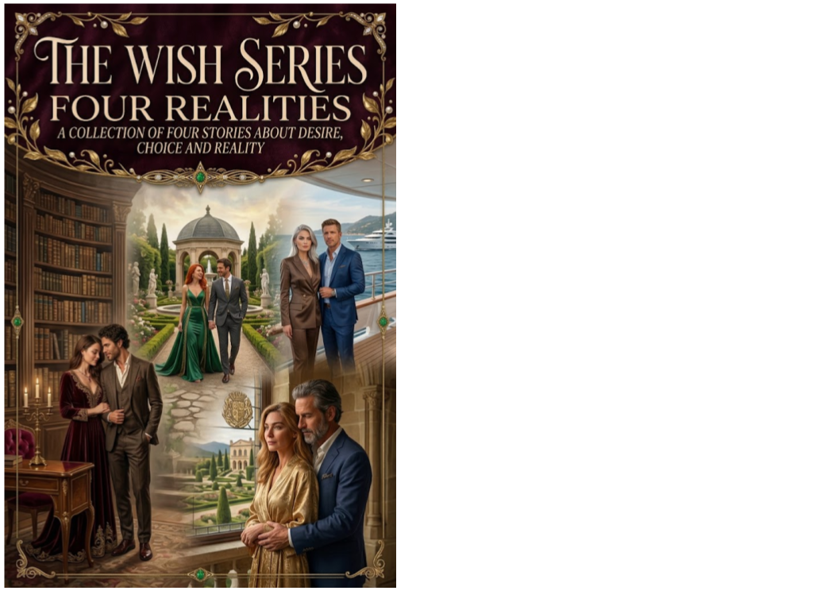

Science Fiction Literature · Axiologic Research Editions
The Wish Series
Four Realities
Every desire asks a second question: which reality are you willing to live in when it comes true?
Four lives after the wish
The Wish Series: Four Realities gathers four speculative stories about what happens when a desire stops being private and becomes an architecture for a life. Wealth, romantic certainty, status and the promise of a better world appear not as simple rewards, but as choices that alter what a person can see, owe and lose.
The collection moves through Wishfull, Everything, Better Reality — Maya Arden and Better Reality — Daniel Hale. Each story starts from a wish that seems legible, then follows the consequences into the ordinary pressures of work, love, ambition, memory and self-justification.
Desire is never only a private matter
What does a wish reveal? Often not a hidden essence, but the quiet compromises that a person had already learned to call necessary.
Why four realities? Because a single answer to desire is too neat. The stories give different people, relationships and social worlds their own test of what a fulfilled wish can demand.
What kind of science fiction is this? Close to contemporary life, but shifted just far enough for ordinary ambitions to become strange again.
A wish does not remove the need to choose. It makes the choice impossible to ignore.
Two complete editions
The complete collection is now available in English and Romanian. Both editions can be read in the adaptable online reader or downloaded as the original PDF; the Romanian edition remains available under the title Patru Realități.